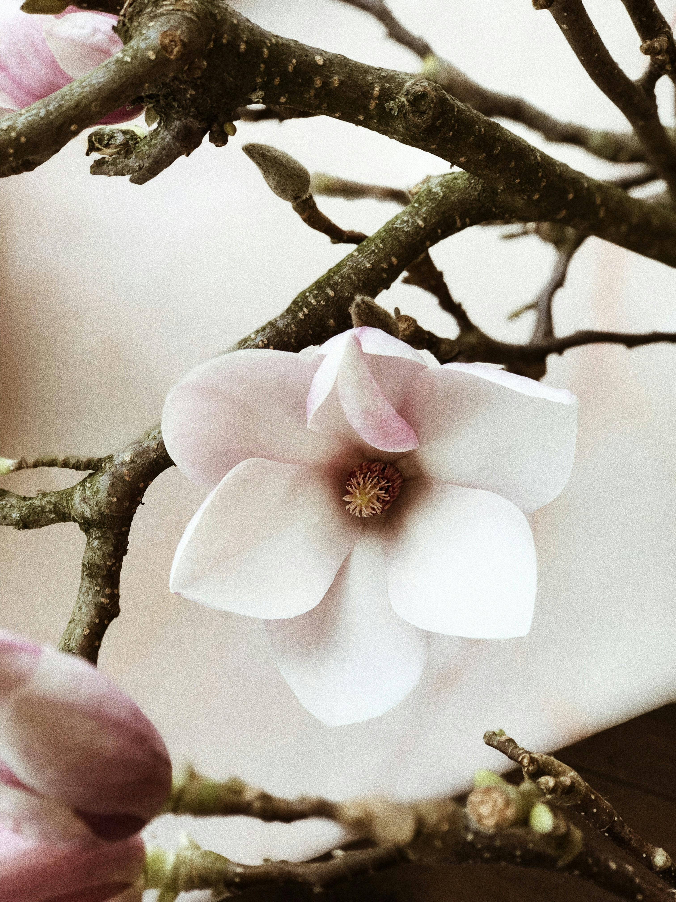
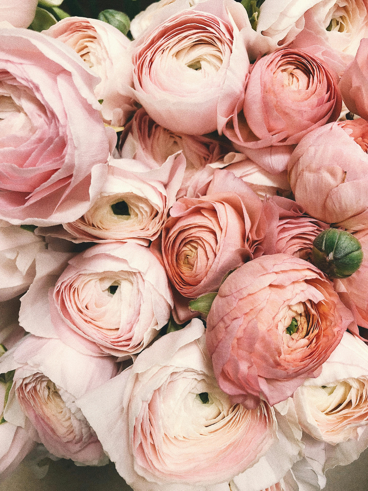

Flor de Magnolia
La Magnolia es grande, fragante y elegante, con pétalos carnosos blancos o rosados en forma de copa.
Open

Ranunculus
El ranúnculo es una flor pequeña y vistosa, con muchos pétalos finos en capas que le dan aspecto de rosa o peonía; puede ser de colores brillantes como amarillo, naranja, rosa o rojo.
Open
Adenium Obesum
El adenium obesum o flor del desierto es una planta suculenta de tallo grueso y retorcido, con flores en forma de trompeta, generalmente rosadas, rojas o blancas, que destacan por su intenso colorido.
Open